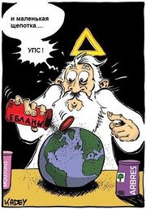
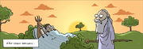
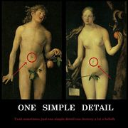
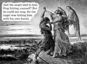
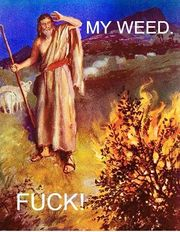
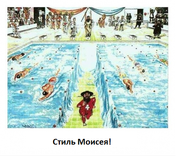
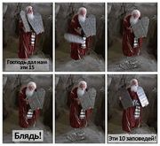

Ветхий завет
Мемы Ветхого Завета — одни из самых первых мемов на этой планете, проникшие в культуру почти всех стран мира. Были выдуманы древними жидами/были сотворены самим Господом Б-гом (нужное подчеркнуть).
Сотворение мира

Вначале было слово. И слово было Б-г… Потом он создал землю, закопал в неё, забавы ради, скелеты динозавров, а сверху прикрутил твёрдое небо. Чтобы птиц в космос не сдувало, вестимо. Потом он создал свет, а через пару дней сверху к небесной тверди приколотил звёзды и реликтовое излучение — будущим астрономам на потеху. Потом были запущены осветительные системы типов «Солнце» и «Луна». Да-да, сначала был создан свет, а только потом Солнце, что неудивительно, если учесть, что оно — материальный объект, а свет — поток электромагнитной энергии, который, как экспериментально доказано, может преобразовываться в пару «частица-античастица», то есть порождать материю. (Но в 1917 году об этом ещё не знали). Под конец настругал жывотнайе и прочее рыбие, а также сифилис, проказу, СПИД, чуму, сибирскую язву, ну и людей, чтоб было где жить этим весёлым микроскопическим проказникам. На седьмой день Мавр бог сделал своё дело и, поняв, что он малаца, удалился.
Тысячи лет сии прохладные истории принимались на веру (а как иначе?). Но с ростом секуляризации повылазили всяческие еретики и прочие атеисты, имевшие смелость заявить, что царь небесный-де ненастоящий!
Сначала всякие Коперники и Галилеи посмели предположить, что Земля вращается вокруг Солнца, хотя в Писании очень чётко разъясняется:
Ты поставил землю на твёрдых основах: не поколеблется она во веки и веки
Псалом 103:5.
Он распростёр север над пустотою, повесил землю ни на чём.
Иов 26:7.
В европах поначалу сих еретиков отправляли к начальству на ковёр или отлучали от церкви, но потом забили на них болт. В царской России за учение Коперника ссылали в Сибирь чуть ли не до самой революции. А вот евреям учение Коперника было глубоко фиолетово и их догматам не противоречило.
В конце концов, попов таки прижали к стенке, и те согласились, мол, хер с вами, пусть будет ваш Большой взрыв, но вот откуда, позвольте, взялась сингулярность? А? Не знаете? То-то же.
Кроме буквального смысла прохладных историй Библии существует несколько уровней толкования оных. Более того, по мнению авторитетных клириков, некоторые сюжеты (ЧСХ, их количество всё время множится) ни в коем случае нельзя воспринимать буквально, и единственно верный смысл — аллегорический. Причём у тех же православных и католиков он может сильно отличаться, не говоря уже о разных сектах, где частенько смысл священных текстов трактуется как «Отдайте все свои деньги нашей церкви» и «Участвуйте во всеобщих оргиях». Поэтому в царской России самостоятельно читать Библию запрещалось, а то ведь вдруг чего не так поймут. Хотя даже если бы захотели, прочтение несколько затруднило бы абсолютное незнание подавляющим большинством народа иностранных языков, потому как на русский язык книжонку перевели только в 1876 году.
Вместе с тем, следует правильно понимать ситуацию. Ветхозаветной концепции мира около трех тысяч лет, и писалась она, фактически, пастухами (в сравнении с тем же Египтом уровень был сильно ниже). Отсюда следует, во-первых, даже если передать Моисею книжку с концепциями современного естествознания, то все равно, представление о мире со временем скатилось бы обратно до прежнего уровня. Во-вторых, в те времена не существовало научного метода, соответственно, и требовать научности никак нельзя. В-третьих, это религия, а не наука, перед ней стоят иные задачи.
Поэтому при попытке толстого троллинга вроде «Ололо, в Библии сказано, что Земля создана раньше Солнца! Ололо, там всё неправда! Ололо, Бога нет!» на вас могут посмотреть как на малолетнего дурачка.
Адам и Ева
Адам с Евой резвятся в саду, спускается к ним Бог и говорит:
— Дети мои, у меня есть вам два подарка, только вы должны решить, кому какой. Первый подарок — писать стоя.
Адам громче всех орал и бился головой о деревья, что он хочет ссать стоя, что всю жизнь мечтал. Ева ему уступила. И Адам побежал по саду, радовался, прыгал, кричал, ссал на всё подряд! На деревья, на цветы, на каждую букашку и просто на землю! Ева встала рядом с Богом. В молчании смотрели они вместе на это безумие. И тут Ева спросила:
— Боже мой, а второй-то подарок какой?..
И молвил Бог:
— Мозги, Ева. Мозги!.. Но мозги, Ева, придётся тоже отдать Адаму, иначе он тут всё обоссыт!


— Если их создал Бог, то почему у них есть пупок?
— Это ещё что! Главный вопрос: почему пупок есть у Б-га?! Раз люди сделаны по его образу и подобию. И откуда у Адама соски, например, если Еву, организм их применявший, создали позже и т. д.
Бог создал человека из праха земного, естественно, по образу своему и подобию (как же иначе?). А через какое-то время, посмотрев, как мужик этот жизни радуется, заделал ему бабца из его же ребра, чтоб она его пилила да мозг выносила. Жить в Эдемском саду, который, кстати, находился на земле, а не на небе, было весьма неплохо, так как в поте лица своего есть хлеб не приходилось. Но люди не были б людьми, если б не променяли все эти ништяки на один фрукт сомнительного свойства. За что они тут же были выгнаны голой жопой на мороз, причём в буквальном смысле: если раньше Адам мог спокойно ходить по Эдему, потрясая пинусом, то теперь МПХ пришлось прикрывать фиговыми листочками. А чтоб людишки не смогли вернуться, у входа поставили вахтёра с синдромом мечом. Цимес в том, что изгнание из рая произошло не столько потому, что люди вкусили запретных плодов (которые, как известно, сладки) и тем самым познали, что такое хорошо, а что такое плохо, сколько потому, что в раю росло ещё и Древо Жизни, откушав плодов которого, можно было стать бессмертным. Боженька подумал: «А вдруг Адам, не дай Я, сожрёт фруктов ещё и с этого дерева и тогда вообще станет равным мне же?» У Боженьки неприятно засосало под ложечкой, и он решил перестраховаться.
В общем, в следующий раз, когда вы будете с трудом подниматься на работу, или заболеете, или вообще будете помирать, знайте — во всех ваших страданиях виноваты бабы, а потому не забывайте им об этом напоминать. Грехопадение Адама и Евы имело и другие последствия. Теперь все хуманы по дефолту после рождения наследовали первородный грех — такую каку, из-за которой ты хоть усрись, но в рай не попадёшь. Правда, в 33 году н. э. некто Иисус при помощи висения на кресте обнулил грехи человечества и разработал-таки систему попадания в Рай. Но и тут церковь нашла выход: хочешь воспользоваться плодами трудов Христовых? Приобретай лицензию, то есть, принимай крещение. А то святой Пётр без чека в Рай не пустит. Ну или сделай обрезание — евреи в первородный грех не верят.
Кстати, ещё они не верят в то, что змей-искуситель, соблазнивший Еву откушать яблочко (в оригинале — плод) с Древа Познания Добра и Зла, был самим Сатаной, — они считают, что это был ангел Самаэль.
Почувствовав, что им теперь ничего не страшно, британские учёные начали выдумывать разные теории об этом сюжете, одна охуительней другой. Особо отличился один английский натуралист, который поимел наглость заявить, что человеки созданы не Господом нашим Всевышним, а произошли от каких-то грязных вонючих макак. Клирики ещё раз посмотрели писание:
И сказал Бог: сотворим человека по образу Нашему [и] по подобию Нашему, и да владычествуют они над рыбами морскими, и над птицами небесными, [и над зверями,] и над скотом, и над всею землёю, и над всеми гадами, пресмыкающимися по земле. И сотворил Бог человека по образу Своему, по образу Божию сотворил его; мужчину и женщину сотворил их.
Бытие 1:26-27
и, охуев, начали Дарвина травить. Ну а что им оставалось? С круглой Землёй ещё можно было смириться, а вот теория эволюции прямо так и говорит, что во-первых, книга бытия — говно, а во-вторых, состоит из ЛПП. Учёные ответили своими вескими доводами, и всё завертелось… И вертится до сих пор.
Немного позже мракобесы изобрели генетику и установили, что-де человек, от которого произошли все современные мужики, и правда существовал 90 тыщ лет назад. И Ева таки тоже была, но за 50 килолет до Адама. Как-то вот так. Вообще, так уж повелось, что любых первых людей любят называть Адамом и Евой. Особенно этим грешат всяческие писатели неграми.
Каин и Авель
Старшим из детей Адама и Евы тоже пришлось несладко. История известна даже людям, далёким от Библии, ибо люто меметична: приревновав Б-га к младшему брату (из-за того, что на откаты с добычи того Отэц смотрел более благосклонно), старший его благополучно грохнул. После чего, будучи застуканным Б-гом, начал оправдываться (я не я, лошадь не моя, и вообще он сам). Б-г, что для него большая редкость, Каина не убил, а сотворил с ним нечто неясное (печать, чтобы никто его не убил) и отпустил на все четыре стороны.
Каин, соответственно, отмаявшись, ушёл на восток в землю Нод. Где благополучно и размножился (то ли почкованием, то ли Лилит поймал) до народа колдунов, воинов и чудотворцев, гордившихся тем, что за Каина мстилось (тем, кто пытался его убить) всемеро, а за них в семьдесят раз всемеро.
Ноев ковчег
И увидел Господь [Бог], что велико развращение человеков на земле, и что все мысли и помышления сердца их были зло во всякое время; и раскаялся Господь, что создал человека на земле, и восскорбел в сердце Своём
Бытие 6:5-6
Вымирание динозавров
В допотопные времена Создатель, наигравшись в людишек, внезапно обнаружил, что они перестали ему поклоняться и живут, сволочи, в своё удовольствие. Сожалея о создании этих обезьян (чего, конечно, быть не может, ведь он всезведущ, а значит знал с самого начала, что выйдет фейл), Б-г решил, что раз он их породил, то он их и убьёт. Как творческая личность, он избрал творческий подход: вместо мгновенного экстерминатуса одним словом хуманов было решено утопить как котят, для чего и был устроен всемирный потоп.
Однако во всём этом угаре и чаде кутежа был обнаружен один праведник, который молился, постился и мечтал об изобретении радио. А убивать дурачка, который неистово тебе поклоняется, было бы как-то неправильно. Но опять же, просто спасти его вовремя, послав вертолёт, тоже было бы некошерно, а потому ему было приказано самому строить себе баржу для пережидания БП. Кроме самого Ноя с семьёй в его ковчег было приказано загрузить каждой твари по паре, ну, чтоб потом заново всякое зверьё не кастовать. А это значит, что у Ноя и Ко в организме присутствовали аскариды, солитёры, вши и другие друзья человека, иначе как бы они сохранились до наших дней? Эволюции-то не существует.
Ной тусовался в своём зверинце почти год, временами пинговав голубем землю (первый раз птичка не принесла ничего, второй раз — оливковый лист, а в третий раз и вовсе свалила нафиг из этого зоопарка), после чего радостно сошёл со своего судна, причалив к первой же попавшейся горе, коей оказался Арарат. Надо понимать: поскольку в его закрытом хлеве находились сотни тысяч животных, духан там был тот ещё. А сам голубь мира с оливковой ветвью в клюве начал форситься в качестве символа мира лишь только после WWII.
Пока зверьё вновь заселяло землю путём кровосмесительных связей, люди тоже начали порождать разные народы. У Ноя было три сына: Сим, от которого соответственно произошли семиты, Иафет, от которого пошли белые люди и Хам, породивший хамов хамитов — африканцев. Последний сынишка был интересной личностью: застукав своего бухого папашку валяющимся голышом, растарабанил его попчанский. За что и был проклят: «раб рабов будет он у братьев своих». Таким образом, частенько оправдывали рабство (да и расизм в целом) — де негры это и есть те самые потомки Хама, а значит они должны пахать. Хамство тоже пошло отсюда. А это значит, когда очередная тётка назовёт тебя хамлом, она намекает на нестандартную ориентацию твоих предков.
Сама концепция всемирного потопа, как и другие легенды из Книги Бытия, скорее всего, была невозбранно спизжена евреями у шумер и прочих вавилонян. Тем не менее, у индусов, греков и некоторых других народов присутствуют очень схожие мифы, что говорит о том, что какой-то потоп был и в самом деле. И таки учёные обнаружили, что где-то что-то и правда давно быстро утонуло, и утонуло скорее всего из-за повышения уровня мирового океана, вызванного не иначе как вредоносными выбросами сотен фабрик и заводов.
Долгое время Ноев ковчег считали страшненьким мифом, пока в пятидесятых годах СМИ не опубликовали занятную фотку горы Арарат, на которой таки можно было разглядеть очертания ковчега. Радости верующих не было предела, однако атеисты смотрели на это фото как на марсианского сфинкса.
В основу легенды положена память о серии разрушительных цунами, поражавших берега Средиземного моря вследствие подводных и островных вулканических извержений (что в свою очередь было вызвано перераспределением массы воды после таяния ледникового щита).
Вавилонская башня
И сказали они: построим себе город и башню, высотою до небес, и сделаем себе имя, прежде нежели рассеемся по лицу всей земли
Бытие 11:4
Вообще, евреи большой шумный Вавилон не любили и в своих сказках называли его сосредоточением греха (именно поэтому иногда большие города называют Новым Вавилоном). Что неудивительно: они частенько огребали от всяких Навуходоносоров. Так вот, в одной из легенд люди, слегка очухавшись от всемирного потопа, решили запилить себе город с башней и блудницами. Причём, кроме всего прочего, башенка должна была стать убежищем на случай, если вселюбящий боженька снова пожелает всех утопить. Сам же бог, похоже, очканул, что людишки залезут к нему на небеса, и занялся саботажем. Второй раз топить он никого не стал (ибо обещал), а просто взял и разделил людей на разные лингвистические группы. Чтоб неповадно было. Строители, перестав понимать друг друга, бросили эту затею. История строительства вавилонской башни называется вавилонским столпотворением. Мем столпотворение следует употреблять в смысле толкотни и неразберихи, а не в смысле большого скопления народу.
На самом деле за недостроенную Вавилонскую башню впечатлительные жиды скорее приняли один из Зиккуратов, которые строились в множестве. А ещё б их не строить: +2 к шпионажу, −50% содержание, позволяет обратить одного жителя в шпиона. Сейчас уже, конечно, никто (за некоторым исключением) не рассматривает этот миф в качестве объяснения появления разных языков и расселения народов. Его теперь рассматривают в контексте космического лифта. И первую такую аллюзию проводил ещё Кларк в романе «Фонтаны рая». Всякие же любители традиционных (и не очень) религий и прочие эзотерики ищут глубинный смысл в легенде, ИЧСХ, находят, причём каждый — свой. А ещё вавилонской башней иногда называют грандиозные проекты, закончившиеся фейлом из-за просчётов или влияния внешних причин.
Несмотря на унылость легенды, этот фаллический символ не эксплуатировал только ленивый. В Серьёзном Сэме и Персидском Принце по сабжу можно даже самостоятельно побегать, а в Пейнкиллере в конце одного из актов башня бодро проседает и разваливается под дичайшим весом Аластора.
Авраам
Авраам, (он же Евер) тот самый, что родил Исаака, что родил Иакова, что родил Иуду и так далее, родоначальник еврейского и некоторых других не столь значительных народов. Считается, что он был первым, кто надоумил людишек молиться одному богу (сразу видно — еврей, решил сэкономить на подношениях богам), ну или как минимум придумал свою религию, от которой впоследствии и произошли все крупнейшие мировые монотеистические религии, которые в честь него и называют авраамическими. Собственно, за верное служение ему и было обещано пейсатое потомство и земля обетованная.
В возрасте 99 лет Абрамчику привиделось, что к нему снова явился бог и приказал сделать себе и всем родственникам обрезание. Дедушка старый, ему всё равно, ну а родственники, вероятно, решили ему пофлюродросить (деда, может, и в маразме, но богат же ж). Так и повелось.
Приторговывал женой: фараон взял её себе, а Аврааму благодаря этому «было хорошо: он имел крупный и мелкий скот, ослов, рабов и рабынь, лошаков и верблюдов». Однако Бог поразил фараона и его дом из-за Сары венерическими болезнями.
Муслимы же считают Ибрагима родоначальником всех арабов (точнее, его сына Исмаила, а вот недорезанный Исаак таки породил жидов), придумавшим хадж, Каабу и даже небо и даже Аллаха.
Содом и Гоморра
И пролил Господь на Содом и Гоморру дождём серу и огонь от Господа с неба, и ниспроверг города сии, и всю окрестность сию, и всех жителей городов сих, и произрастания земли
Бытие 19:27-29
Где-то в районе Мёртвого моря стояли пять городов. Города были древние и красивые, и жили в них самые обычные люди, которые занимались самыми обычными людскими делами: бухали, веселились, трахались — в общем, делали мерзости перед ликом Божим. Вот за эти богомерзости, а также за жадность и гордыню (а не за приключения на заднем дворе, как принято считать — хотя и не без этого), вселюбящий господь сии города решил переместить в dev/null, хотя там успел поселиться племянничек Авраама по имени Лот. Предварительно Б-г решил перетереть вопрос с Авраамом, формальным (по божественному обещанию) хозяином этой территории. Тот возразил против такого уничтожения людей и имущества. В ответ Б-г велел ему нарыть полтос праведников — тогда, мол, всё будет на мази. Авраам же, не оставляя сомнений, какой народ от него произошёл, ответил, что больно дохуя и вообще. В итоге сторговались на десятке. Не нашлось.
Прибыли два ангела с инспекцией, поселились у Лота, вечерком собралась толпа и попросила анусы ангелов в общественное пользование, чего-де такие смазливые и незнакомые тут ходят? Лот самоотверженно предложил вместо ангелов подставить под копья толпы своих дочерей, но идея в народе одобрения не нашла: попы ангелов оказались более привлекательными. Ангелы, недолго думая, ослепили толпу и посоветовали Лоту свалить из города, потому как сейчас НАЧНЁТСЯ. Тогда Лот расчехлил свой трактор, загрузил жинкой с дочками и свалил из города. Затем Бог устроил экстерминатус всем погрязшим в грехе городам. После таких событий почти истреблённую популяцию надобно было восстановить, для чего дочки и заюзали своего не слишком праведного папашку, предварительно напоив его до беспамятства (в данном случае инцест уже не был грехом, так как жена случайно самовыпилилась посредством сверхбыстрой кристаллизации тела).
Атеисты же уничтожение города объясняют более прозаически: ведь если уничтожать каждый город, населённый пидорами, то почему до сих пор стоят Рим и ДС? Так, например, города могли помножить на ноль рядом находящиеся вулканы, банальное землетрясение, ну или небольшой космический камушек, на большой скорости догнавший Землю. По мнению фантастов, города были случайно поломаны космической НЕХ. Около 2006 года были всё-таки найдены развалины деревни, по тем временам считавшейся городом, и правда подвергшейся бомбардировке расположенного вблизи вулкана. Достоверность факта не вызывает сомнений, так же как и то, что все, будь то грешники или не грешники, заранее благополучно свалили из деревни, приметив признаки извержения. Деревня, несмотря на несильные разрушения, была покинута, возможно, из-за пресловутой серной вони и риска нового извержения, но в памяти особо впечатлительных остался факт «наказания грешников».
Есть другая версия, согласно которой Содом находится далеко от Мертвого моря и не подвергался уничтожению. Его настоящее название — Седима. Достаточно часто в библейских текстах можно обнаружить, что имя персонажа, народа или местности соответствует роли, которая отводится им в повествовании. Эти искажения сделаны намеренно, чтобы показать божественное предопределение. «Содом» переводится как «горящий». Так же как название города «Бавел» (Вавилон) было образовано от глагола «балал» — «перемешивать», хотя настоящее название этого города Баб-Илу — «Божьи врата», что никак не намекает на библейскую историю о столпотворении.
Жертвоприношение Исаака

Исаак неплохо жил со своей мамой, помешанной на религиозных телешоу, до тех пор, пока она однажды не услышала глас Божий, который приказал ей принести сына в жертву. Исаак, хоть и был полным омегой, над которым издевались одноклассники, ислам принимать не спешил и сбежал от мамаши в подвал. Там среди говен он встречает своих братьев и сестёр разной степени мертвости и толпы вражин. А ещё мать, и её сердце, и даже самого Дьявола, и даже Аллаха!
Что? Хотите более библейскую версию? Пожалуйста:
Бог сказал [Аврааму]: возьми сына твоего, единственного твоего, которого ты любишь, Исаака; и пойди в землю Мориа и там принеси его во всесожжение на одной из гор, о которой Я скажу тебе.
Бытие 22:2
Но всё, конечно, кончилось хорошо, ибо в последний момент Б-г передумал и Исаака заменили агнцом. И зря, так как от него (Исаака, а не барана) потом произошли евреи. Казалось бы, причём здесь история Адамова перворожденного?
Мораль же такова: с религиозными фанатиками держите ухо востро — порешат за милую душу, ежели им это прикажут голоса в голове.
По версии муслимов, вместо Исаака был его брат Исмаил, так как потомки Исаака — евреи, а потомки Исмаила — арабы. В честь чего ежегодно празднуется курбан-байрам с жертвоприношением барана.
Лестница Иакова
И увидел во сне: вот, лестница стоит на земле, а верх её касается неба; и вот, Ангелы Божии восходят и нисходят по ней. И вот, Господь стоит на ней и говорит: Я Господь, Бог Авраама, отца твоего, и Бог Исаака. Землю, на которой ты лежишь, Я дам тебе и потомству твоему;
Бытие 28:12-13

Собственно, бэд трип Иакова и что он там на самом деле означает, никого особо не волнует. Намного интересней апокриф с описанием этого прихода, который даже попал в индекс запрещённых книг, а также одноимённый фильм, который тоже рассказывает о приходе, в котором видится место между небом и землёй. К слову сказать, создатели Silent Hill вдохновлялись именно этим фильмом. А в манге Gunnm: Last Order так называют космический лифт. Так что всё-таки библейские сказки могут таки породить что-то стоящее.
Исход из Египта
Долгое время эти сказки воспринимались на веру и не требовали доказательств (а тем, кто требовал, предлагали погреться на удобных помостах из хвороста на центральных площадях городов, например). Потом Бог умер, и всё это дело перешло в разряд мифов Древней Греции, пока англичане не изобрели археологию и не начали копаться в чужих могилах (естественно, исключительно в научных целях). Так вот, копаясь в глиняных табличках, археологи выяснили, что-де евреи-то и правда свалили из этих ваших ебиптов (мягко говоря, применять с осторожностью). Более того, все описанные в Библии места оказались существующими на самом деле, вплоть до колодцев и сортиров. Так что на многие события, описанные в пятикнижии, историки начали смотреть по-другому. Хотя на всякие горящие кусты и говорящих ослов они смотрели как на Фоменко. А значит, надо было всем этим фокусам найти объяснение: не приписывать же их какому-то бородачу в белом балахоне. ИЧСХ, таки нашли.

Моя травка. Блядь!
Изначально Мойша был жрецом при дворе фараона, однако его выгнали за убийство КЕМ. Моисей, как истинный еврей, просто так не ушёл, а прихватил ещё идейку о едином Б-ге. И вот через какое-то время этот Б-г к нему пришёл с делом: давай ты мне будешь поклоняться, а я тебе кошерное государство сей же час.
И явился ему Ангел Господень в пламени огня из среды тернового куста. И увидел он, что терновый куст горит огнём, но куст не сгорает.
Исход 3:2
Данный фокус был нужен, чтобы передать Моисею месседж о том, что пора расчехлять трактор и валить из Ебипта куда подальше.
На самом деле такой куст и вправду существует. Называется он ясенец белый. Это растение выделяет эфирные масла, которые на горячем синайском солнце легко и красиво воспламеняются и быстро выгорают, не причиняя вреда растению. Некоторые учёные, правда, считали, что дело не в кусте, а в статическом электричестве, ну или в приходе, под которым находился Моисей, но эти версии не столь красивы.
Впрочем, такое интересное объяснение никак не мешает православным дрочить на горящий куст. В одном из монастырей даже есть тот самый™ кустарник, на который продолжают неистово молиться почище даже, чем долбославы на деревянные хуи.
Десять казней египетских
Собственно, фаломорфировав от говорящих деревьев, Моисей с братюней пришёл к фараону и сказал, что он устал и он уходит. Ну и норот его заодно. Фараон посмотрел на него как на идиота и прогнал ссаными тряпками: ишь чего захотел, наглец, дармовую рабочую силу отпускать!
По альтернативной версии, фараон, может, и рад бы отпустить всю эту нечисть со своих земель, но дух народа Израилева произвёл правителю небольшое короткое замыкание в мозгу, лишив того способности раскаиваться, дабы не отклонялся он от собственной партийной линии. Как бы то ни было, Моисей после такого приёма, конечно, обратился к крыше, и тут начался чад кутежа и дичайший угар. Зачем вести двуличные игры с разумом фараона, одному Б-гу ведомо.
1. Наказание кровью
И поднял [Аарон] жезл и ударил по воде речной пред глазами фараона и пред глазами рабов его, и вся вода в реке превратилась в кровь, и рыба в реке вымерла, и река воссмердела, и Египтяне не могли пить воды из реки; и была кровь по всей земле Египетской.
Исход 7:20,21
Тут обычно всё объясняется либо говнами, натёкшими из разных озёр во время разлива, либо цветением неких водорослей или бактерий. И то, и другое делает реку непригодной для питья. Похоже сей фокус был известен и самим египтянам, потому жидам они не поверили.
2. Казнь лягушками
И сказал Господь Моисею: скажи Аарону: простри руку твою с жезлом твоим на реки, на потоки и на озёра и выведи жаб на землю Египетскую. Аарон простёр руку свою на воды Египетские; и вышли жабы и покрыли землю Египетскую.
Исход 8:5,6
См. предыдущий пункт. Ежели вода негодна для питья, то понятно, что лягушки в ней жить не будут — они ж не идиоты. Стоит заметить, что про популярный в кино дождь из жаб тут ни слова.
3. Нашествие кровососущих насекомых
…Аарон простёр руку свою с жезлом своим и ударил в персть земную, и явились мошки на людях и на скоте. Вся персть земная сделалась мошками по всей земле Египетской. Старались также и волхвы чарами своими произвести мошек, но не могли. И были мошки на людях и на скоте. И сказали волхвы фараону: это перст Божий. Но сердце фараоново ожесточилось, и он не послушал их, как и говорил Господь.
Исход 8:17-19
См. предыдущий пункт. Лягушки свалили из речки и наверняка были пущены на шаурму или просто издохли от жары. Соответственно, комарьё жрать стало некому (да ещё и корму всяким паразитам прибавилось), и оно расплодилось. Экология, блеать!
4. Наказание пёсьими мухами.
Ну ты понел.
5. Мор скота
6. Язвы и нарывы
Мухи кусают @ эпидемии начинаются. Улавливаешь?
7. Гром, молнии и огненный град
и Господь произвёл гром и град, и огонь разливался по земле; и послал Господь град на землю Египетскую; и был град и огонь между градом, [град] весьма сильный, какого не было во всей земле Египетской со времени населения её. И побил град по всей земле Египетской всё, что было в поле, от человека до скота, и всю траву полевую побил град, и все деревья в поле поломал
Исход 9:23-25
Есть мнение, что где-то в Эгейском море ёбнул вулкан, из-за которого не только стали невозможны трансатлантические перелёты, но и загнулась пара средиземноморских цивилизаций, ну и Ебипет чуть-чуть пеплом с серой засыпало, что нехило повлияло на климат. А потому прошло несколько гроз с крупным градом и молниями. В рашке это дело привычное, а местные кроманьонцы высрали пару пирамид.
8. Нашествие саранчи
Тогда Господь сказал Моисею: простри руку твою на землю Египетскую, и пусть нападёт саранча на землю Египетскую и поест всю траву земную [и] всё, что уцелело от града.
Исход 10:12
Повышенная влажность и отсутствие нямки, которую (сюрприз-сюрприз!) уничтожило градом, привели к миграциям саранчи. Ну а что ей делать, когда у неё кончается и конина, и говядина, и рыбий жир? Кузнечики и сейчас, бывает, так с голодухи бесятся.
9. Тьма египетская.
Неожиданно стало темно.
Здесь есть несколько версий: сирокко, затмение, вулканический пепел или саранча из предыдущих пунктов — выбирай на любой вкус. Вероятнее всего, таки магмы накрошило (та же Библия упоминает вид огненного столба, за которым шли евреи, и об этом же говорит пункт 7).
10. Смерть первенцев
В полночь Господь поразил всех первенцев в земле Египетской, от первенца фараона, сидевшего на престоле своём, до первенца узника, находившегося в темнице, и всё первородное из скота
Исход 12:29
Тут принято всё объяснять тем, что египтяне своих первенцев кормили самой лучшей нямкой, причём им доставалась первая порция. Вот они и двинули кони первыми, когда весь жрат попортился из-за саранчи и переносимой с её калом заразой.
Самым интересным во всей этой камарилье оказывается бессмертие египетского скота, который начисто вымирал во время 5-й и 7-й казней, а затем лишался телят в 10-й, но всякий раз успевал до следующей экзекуции восстановиться в числе настолько, чтобы было жалко, что он сдох. Но даже после этих бедствий у фараона в хозяйстве всё равно остались лошадки, которых запрягли в колесницы, чтобы погнать евреев к Красному морю и эпично утопить в водах оного.
В конце концов фараон обоссался и отпустил евреев на ПМЖ в Израэль. А всё потому, что древние не могли в логику, а учёным предпочитали жрецов. Ну или просто Моисей его вконец доебал, да и жиды с возу — египтянам больше еды останется.
В итоге в египетских летописях не сохранилось никаких упоминаний об исходе евреев, так что событие было либо настолько малозначительно для Египта, что не воспринималось как что-то особенное, либо является целиком ЛПП. Ну, или обидно было признавать такой fail. Сверхдержава всё-таки. Пропаганду тоже не в СССР придумали.
Скитания по пустыне
И простёр Моисей руку свою на море, и гнал Господь море сильным восточным ветром всю ночь и сделал море сушею, и расступились воды
Исход 14:21

Тот самый трюк с водой
Разгневанный фараон (а еще бы ему не быть разгневанным: ЕРЖ, будучи ЕРЖ, спиздили золотовалютный запас Египта, см. Исход 11:1-2 и Исход 12:34-35) послал войско за беглыми рабами, однако те успели перебежать по дну расступившегося Красного моря (или Черного моря, или какого-то озера, надо заметить, что назвали море Красным англичане из-за опечатки в слове «reed»), а вот фараон не успел.
Компутерная модель показала, что ураган и правда может отогнать воду на пару часиков. Но тут возникает вопрос: «А откуда взялся ураган в пустыне? Неужели и правда это кара Господня?» Другая теория говорит, что дело не во ВНЕЗАПНОМ ветре, а в банальном цунами: море сначала отступает, а потом быстро, решительно наступает. А вот со смертью фараона в нахлынувших водах слегка переборщили — учёные таки откопали его мумию и то ли пустили её на чудо-порошок, то ли выставили в каком-то музее, предварительно выяснив, что фараон помер сам.
Свалив из сраного Египта, евреи стали тусоваться в пустыне. Причем бродили они по ней аж сорок лет. Причем так долго они скитались не потому, что Моисей плохой проводник, а с конкретной целью: чтоб все родившиеся в рабстве сдохли, и таким образом рабский менталитет был бы искоренен. Есть и другое мнение: скитания на самом деле никакие не скитания, а кочевой образ жизни. Так-то!
Жить в пустыне — это вам не дома хикковать. Там мама нямку в постель не принесёт. Да и пить в пустыне нечего (кто бы мог подумать!). Но тут опять крыша подсобила:
Пришли в Мерру — и не могли пить воды в Мерре, ибо она была горька, почему и наречено тому [месту] имя: Мерра.
И возроптал народ на Моисея, говоря: что нам пить?
[Моисей] возопил к Господу, и Господь показал ему дерево, и он бросил его в воду, и вода сделалась сладкою. Там [Бог] дал [народу] устав и закон и там испытывал его.
Исход 15:23-25
Данный источник существует на самом деле. Хитрожопые англичане установили, что де водичка горчит из-за сернокислого калия, который можно просто помножить на 0, добавив щепотку щавелевой кислоты, которая содержится в разных растениях. По другой версии, солёную воду тупо подсластили одним из видов барбариса. В любом случае, ловкость рук и никакого мошенства.
Напившись вдоволь, неплохо было бы и пожрать. Правда, сначала особо прожорливых вселюбящий Господь траванул ядовитыми перепелами, чтоб не ныли, но потом сжалился и ниспослал манну небесную.
Вечером налетели перепелы и покрыли стан, а поутру лежала роса около стана; роса поднялась, и вот, на поверхности пустыни [нечто] мелкое, круповидное, мелкое, как иней на земле.
И увидели сыны Израилевы и говорили друг другу: что это? Ибо не знали, что это. И Моисей сказал им: это хлеб, который Господь дал вам в пищу;
Исход 16:13-15
Нет, манна не имеет ничего общего с той белой субстанцией, которую тебя заставляет есть мама каждое утро. Манна — это жрака вроде хлеба, а вовсе не лишайник (ну в самом деле, кто ж в здравом уме станет жрать лишаи?), как считалось долгое время. Манна — это секреция, выделяемая тамарисковыми кустами под давлением тли, которая в засохшем виде — один в один библейские шарики. Бедуины по весне целыми толпами уходят в степи собирать эту херь, прямо как бабки в лес по ягоды.
Второй раз воду было решено извлекать более эффектным способом:
И сказал Господь Моисею: пройди перед народом, и возьми с собою [некоторых] из старейшин Израильских, и жезл твой, которым ты ударил по воде, возьми в руку твою, и пойди; вот, Я стану пред тобою там на скале в Хориве, и ты ударишь в скалу, и пойдёт из неё вода, и будет пить народ. И сделал так Моисей в глазах старейшин Израильских
Исход 17:5-6
Ещё один хитрый фокус, спизженный Моисеем у бедуинов. Во время засух дождевая вода собирается у подножья гор под плёнкой известняка и песка, которую можно легко пробить. О чём-то подобном сообщала британская армия. Во время Первой мировой войны имперский горбатый корпус остановился в вади, чтобы испить медленно сочащейся из известняковых скал водички. Солдаты начали копать, но как-то медленно. Сержанта это подзаебло, он отнял у одного из солдат лопатку и невозбранно уебал (по камню, а не по солдату). Известняк треснул, и из него полился широкий поток чистой воды. Естественно, сержант тут же получил погоняло «Мойша».
Десять заповедей

Ещё до начала большого еврейского путешествия по пустыне Б-г решил расставить точки над «ё», шоб всем было ясно, кто здесь главный. Причём расставить конкретно так, чтоб надолго, суки, запомнили. Моисей был вызван на гору Синай, где под серьёзное шоу (Industrial Light and Magic отдыхает) получил две огромные каменные плиты с десятью указаниями. То ли он был ещё далеко не преклонным старцем, то ли вниз он на них съезжал, як школота на санках — способ транспортировки тяжеленных каменюк объяснить сложно.
Позже Б-г решил, что этих десяти указаний как-то маловато будет и надо бы выдать евреям ещё немного заповедей. И ещё чутка сверх того. В общем, когда раздача закончилась, евреи насчитали аж 613.
В общем, суть такова:
- Яхве — единственный труъ б-г. Долбославие — это плохо.
- На Джастина Бибера не фапай и на Майкла Джексона тоже. И Чак Норрис с Брюсом Ли на самом деле не такие уж крутые. Да и ещё, хуи из дерева тоже не вырезай и иконы не рисуй, не рисуй иконы, сука.
- Не произноси и не пиши имени Божьего, а пиши «Б-г», и только так.
- Шли нахрен Путина, который переносит выходной с субботы на понедельник, ибо в субботу отдыхать любовно и прельстиво.
- Люби родителей, пидор.
- Не воруй.
- @ Не убивай.
- Ебать чужую тян — это стыдно.
- Не пизди в суде.
- Не желай Путинского дворца, яхты Абрамовича и машины Рамзанчика и не фапай на чужую жену.
Собственно, заповеди в основном годные и полезные (особенно для нецивилизованных дикарей, которые без страха кары божией могли легко друг друга угандошить ни за что). А потому в том или ином виде почитаются почти всеми муслимами, иудеями и христианами (даже теми, кто смотрит на Ветхий Завет как на говно).
Спустившись с горы, Моисей слегка фалломорфировал: пока его не было, эти идиоты заделали себе Золотого тельца и начали ему поклоняться. Разозлившись на то, что этих придурков и на десять минут нельзя оставить одних, пророк разбил все скрижали. Но в итоге всё кончилось хорошо, если не считать тысяч выпиленных тельцославов, и евреям выдали копию скрижалей завета.
ХГМнутые любят их называть «общечеловеческими ценностями», но в буддизме — восемь запретов, а в даосизме — пять, причём и в те, и в те запреты входит ложь, а десять заповедей разрешают лгать (9-я заповедь касается лишь суда), что открывает возможности для более богатого социального взаимодействия. Алсо, вторая заповедь в своё время стала предметом срача с китайским правительством в лице Императора и закончилась изгнанием христианских миссионеров за непочтение к Конфуцию.
Ковчег завета
Сделайте ковчег из дерева ситтим: длина ему два локтя с половиною, и ширина ему полтора локтя, и высота ему полтора локтя.
И положи в ковчег откровение, которое Я дам тебе.
Исход 25:10,16
Дабы не просрать ценные артефакты, б-г приказал евреям сделать для них сундук, обозванный Ковчегом завета (не путать его с Ноевым ковчегом!). Туда засунули каменные Скрижали Завета с десятью заповедями, Посох Аарона (который легко трансформируется в змею) и Другие Пафосные Вещи, Название Которых Надо Писать С Большой Буквы.
Данная штука сама по себе была убер-артефактом, давала +100 к боевому духу и к удаче, позволяла кастовать экспертное благословление без расхода маны и обладала всякими хитрыми свойствами наподобие убивания любопытных нацистов, заглянувших под крышку. Как-то раз, правда, +100 не хватило, и ковчег был зохвачен филистимлянами. Но тогда он включил другие интересные свойства, а именно полтергейст, и доставил филистимлянам столько эксцессов, что они поспешили его вернуть. Ещё сей ящик умел разговаривать с Моисеем, что вкупе со странными материалами, из которых он был сделан, позволило уфологам выдвинуть теорию, что ковчег был не просто ящиком на палочке, а ретранслятором сигнала от космических пришельцев. Ну, или это просто Сундук из древесины Pyrus sapiens.
После отвоевания Земли Обетованной ковчег был инсталлирован в Храм Соломона, а после разрушения последнего Навухудоносором, пропал. Хотя мы-то знаем, что он находится в секретном хранилище ZOG.
Воды Иордана
Итак, когда народ двинулся от своих шатров, чтобы переходить Иордан, и священники понесли ковчег завета пред народом, то, лишь только несущие ковчег вошли в Иордан, и ноги священников, нёсших ковчег, погрузились в воду Иордана — Иордан же выступает из всех берегов своих во все дни жатвы пшеницы, — вода, текущая сверху, остановилась и стала стеною на весьма большое расстояние, до города Адама, который подле Цартана; а текущая в море равнины, в море Солёное, ушла и иссякла.
Нав. 3:14-16
Когда евреям таки надоело шароебиться по пустыне и они достигли пункта назначения, им надо было пересечь речку. Но строить мост им было то ли нельзя, то ли в лом, а потому они попросили боженьку скастовать им проход.
Сей фокус объясняется просто и фокусом не является. Происходит банальное землетрясение, и скалистые стены русла обрушиваются в реку, наглухо закупоривая её. Последний раз такое наблюдалось IRL в тридцатых годах. Алсо, евреям настолько понравился сей трюк, что они его повторяли ажно два раза. На бис, наверное.
Иерихонские трубы
Народ воскликнул, и затрубили трубами. Как скоро услышал народ голос трубы, воскликнул народ громким голосом, и обрушилась стена [города] до своего основания, и народ пошёл в город, каждый с своей стороны, и взяли город
Нав. 6:9
Придя в обещанную Б-гом землю, иудеи обнаружили, что там ВНЕЗАПНО уже кто-то живёт. Естественно, нахальных ублюдков, имевших наглость поселиться на еврейской земле до того, как туда прибыли евреи, нужно было озалупить. Первым под раздачу попал Иерихон. После того как евреи подудели в дудки и покричали ртами, стены рухнули.
Если бы дело происходило в рашке, то сие чудо можно было бы объяснить экономией на растворе, но древние варвары были не дураки, заботились о своей жопе и строили на совесть. На самом деле, хитрые евреи выкопали ров под стенами, в который постепенно начала сползать земля, и в конце концов стены слегка обрушились. Ну а чтоб защитники особо не усердствовали с камнями, кипящей смолой и всякими острыми предметами, которые не очень приятно ловить черепушкой, иудеи устроили концерт. Те, кому такая версия кажется недостоверной, могут довольствоваться версией банального землетрясения, которое и правда было незадолго до перехода евреями Иордана.
С другой стороны археологи обнаружили, что стены города упали наружу (хотя должны были падать внутрь) в точности как это было описано в Библии. И две предыдущие версии такое никак не объясняют, так что остаётся только божественное вмешательство.
Ах да, все население Иерихона, включая грудных младенцев, было уничтожено евреями, оставили в живых только проститутку Раав и её семью за то, что помогли еврейским шпионам.
При освоении пиндосами земель индейцев на основании мема об Иерихоне (как части Ханаана) была создана доктрина «Явного предначертания». Так же как евреи уничтожали идолопоклонников, просвященные пуритане уничтожали диких индейцев. В девятнадцатом веке превратилась в государственную идеологию, и под неё у Мексики отняли Техас и Калифорнию. Начали войну с испанцами за Филиппины и Кубу.
Земля обетованная
И сказал Господь Моисею, говоря: дай повеление сынам Израилевым и скажи им: когда войдёте в землю Ханаанскую, то вот земля, которая достанется вам в удел, земля Ханаанская с её границами:
Числа 34:1-2
Израильская земля называется обетованной не потому, что там евреи обитают, а потому, что она была обещана Богом (от слова обет) за служение ему. Однако на ней жили какие-то грязные язычники, которым милые и добрые евреи устроили тотальный геноцид. Беря штурмом каждый новый город, жиды как и в Иерихоне вырезали полностью всё население, в том числе женщин, и детей, и даже скот (и после этого они ещё смеют жаловаться на холокост!). Ханаанским племенам такой расклад пришёлся не по нраву, и они таки решили намекнуть кочевникам-захватчикам, куда им надо идти и куда стоит засунуть свой Ковчег завета. Но не выгорело. Иисус (нет, не тот) Навин — преемник Моисея в финальной битве скастовал метеоритный дождь, и армии язычников разбежались. А чтоб потом их в потёмках не искать по сортирам и окончательно решить ханаанский вопрос, он попросил Бога тормознуть движение Солнца и Луны на денёк. В конце концов, ханаане были ассимилированы, а их биологические особенности и технологические достижения стали служить евреям. Хэппи-энд.
Что касается солнцестояния, то учёные тут и вовсе ничего не пытаются объяснить — хитрожопая метафора, и всё тут. Более православные учёные объясняют это чудо остановкой вращения Земли. И им глубоко похуй, что в таком случае планетку просто-напросто разорвёт на куски кинетической энергией. Кстати, на Меркурии из-за особенностей орбиты и обеих скоростей вращения наблюдается забавный эффект, когда Солнце «передумывает» и около недели прёт обратно по небосводу; сие божественное чудо наречено «Эффектом Иисуса Навина».
Самсон
Нашёл он свежую ослиную челюсть и, протянув руку свою, взял её, и убил ею тысячу человек.
Книга Судей 15:16
Самсон — простой еврейский супермен. Жил обычной израильской жизнью, а по праздникам раздирал пасти львам. Однажды решил жениться, но тесть отдал его жену его же дружбану. За наставленные рога надо было отомстить, но не мстить же другу. Более логично было бы отомстить жене, а ещё лучше сразу всему народу жены. Тогда он снял со стены спаса, достал обрез и пошёл в леса партизанить. Выпиливал филистимлян (в оригинале пелештим, то есть тогдашних палестинцев, не являвшихся тогда арабами, и тоже подобно евреям понаехавшим в Ханаан) сотнями голыми руками, а ежли подбирал челюсть дохлого осла, то и вовсе тысячами. В итоге повёлся на пизду, был схвачен и помер на празднике в честь бога Дагона, забрав с собой в ад всех, кто был рядом. Что символизирует, помер он в нынешней Газе.
В целом, большинство жизнеописаний Самсона есть переосмысленный копипаст подвигов Геракла. Тем не менее, Самсон был не менее популярен у творческих натур, которые наваяли всяких картин и памятников типа «Самсон разрывает пасть писающему мальчику».
Давид и Голиаф
Когда Филистимлянин поднялся и стал подходить и приближаться навстречу Давиду, Давид поспешно побежал к строю навстречу Филистимлянину. И опустил Давид руку свою в сумку и взял оттуда камень, и бросил из пращи и поразил Филистимлянина в лоб, так что камень вонзился в лоб его, и он упал лицем на землю. Так одолел Давид Филистимлянина пращею и камнем, и поразил Филистимлянина и убил его; меча же не было в руках Давида.
1Цар. 17:48-50
История о том, как маленький пастушок, замочив здоровенную херовину под три метра ростом, которую ещё звали Голиафом, пришёл к успеху и стал еврейским царём, окончательно решившим филистимлянский вопрос, является объектом фапа задротов, ибо она есть олицетворение того, как маленький, но умный человек сумел замочить здорового альфача. Наверняка многие школьные омеги, начитавшись библии, мечтают о подобном воздаянии хулиганам из класса и даже мастерят пращи, из которых, правда, надо ещё уметь стрелять, ибо без подготовки шанс выбить глаз себе, а не альфачу-обидчику весьма велик.
Кроме озалупливания гигантов, Давид ещё известен изобретением звезды имени себя. А вот Голиаф ничего не изобрёл по причине переизбытка минералов в организме. Зато в честь него теперь называют всяких больших лягушек, тараканов и боевых шагоходов.
Является ли эта история красивой легендой или же всё так и было на самом деле, науке неизвестно. Однако недавно британские учёные нашли какой-то там кусок горшка, который якобы доказывает, что всё так и было.
Соломон
Сулейман — царь и великий князь вся Израиля, сын Давида, мудрый правитель и т. д. и т. п. Пожалуй, самый известный и великий еврейский правитель. Однако до сих пор не найдено никакого подтверждения (даже ссаного камушка), что он существовал на самом деле (в отличие от бати, про которого таки были найдены кляузы, нацарапанные на бетоне).
Иерусалимский храм
Выкурив грязных язычников с земли обетованной, евреи тут же запилили себе кошерное царство. А когда еврейское царство достигло пика своего могущества, было решено запилить Храм по приказу начальства сверху. Нафига он был нужен — никто не знает, но чтоб тот не пропадал зазря, стали проводить там службы, приносить жертвы и запихали туда Ковчег завета, которому даже отвели специальную комнату — святая святых. Куда хрен просто так попадёшь. Причём эта святая святых располагалась на скале, именуемой краеугольным камнем aka камень основания, которая является пупом земли, поскольку именно с этого булыжника Господь начал сотворение мира.
Поскольку евреи были евреями, то они смекнули, что соблюдать 9000 заповедей и прислуживать злобному божку-психопату, когда гешефт уже получен, совсем не обязательно. Ну и стали развлекаться, кто как умел: настрогали себе деревянных хуев, развели всяких астрологов, экстрасенсов и прочих мракобесов. Бог терпел-терпел, но всё же не выдержал и решил прикрыть весь этот цирк, наслав на евреев ассирийцев. Навуходоносор 2.0 разрушил Первый Храм, а всех евреев загнал в вавилонский плен. Конечно, всем было понятно, что это не насовсем (всё-таки избранный народ). Даже самому Навуходоносору во сне намекнули, что царство его — колосс на глиняных ногах — выглядит крутым, но скоро загнется. Так и вышло.
После набега Кира (тоже за номером два) евреям разрешили вернуться домой, где они тут же заделали Второй Храм, который даже просуществовал пятьсот лет (видать, до израильтян таки дошло, что Бога лучше не гневить) и существовал бы дальше, если б не антиримское восстание, в ходе которого храм случайно поломали, оставив от него только стенку, у которой модно плакаться. Третий раз строить храм было боязно, ибо предсказывали скорый БП, который обязательно последует вслед за сим событием.
Валтасаров пир
В тот самый час вышли персты руки человеческой и писали против лампады на извести стены чертога царского, и царь видел кисть руки, которая писала.
Даниил 5:5
Валтасар aka Бальтазар был внуком Навухудоносора и последним царём (точнее, соправителем) Вавилона, просравшим страну персам. Поняв, что конец близок, решил закатить прощальную пирушку. Дабы напоследок насолить жидам, бухать было решено из посуды, стыренной из иерусалимского храма. Но боженька разгневался и написал на стене «хуй мене, мене, текел, упарсин». Тем самым якобы напророчив конец вавилонскому царству. Хотя с другой стороны, можно подумать, что есть какие-то другие варианты, когда у твоего города стоит армия самого Кира Великого. Как бы то ни было, но в итоге охрана дворца набухалась, и армия персов легко овладела им (дворцом, конечно, хотя потом и самим Бальтазаром, да).
Был ли пир на самом деле и видел ли Валтасар надпись, или же просто сивухи нажрался и галлюцинировал, доподлинно неизвестно, что впрочем не мешало народу называть распиздяйство перед надвигающейся бедой Валтасаровым пиром, а всяким Рембрандтам и прочим Саврасовым малевать свои Пиры Валтасара, а розовым Флюидам петь про надписи на стене. По крайней мере, само завоевание Вавилона персами действительно было.
Иона
И повелел Господь большому киту поглотить Иону; и был Иона во чреве этого кита три дня и три ночи.
Иона 2:1
Иона — один из пророков и самый натуральный андед (так как был воскрешён из мёртвых). Но интересен он не тем, что проповедовал божью любовь каким-то там чуркам, а тем, что однажды сел на корабель и поехал туда, куда ехать ему Б-г не велел. За что корабль был покаран посредством насылания шторма. Моряки решили выяснить, кто же тот мемзер, что господа прогневал? Ну и выяснили. В итоге Иона немедленно был отправлен на поиски более подходящего транспортного средства непосредственно в бушующее море. Где его решил подвезти кит, в чьём нутре Иона путешествовал три дня.
Сей опыт оказался заразительным. Очень часто, когда очередная экспедиция к островам Пакапука постепенно накрывалась медным тазом, нужно было срочно найти ведьму, которая, как всем известно, во всём виновата (пусть даже неосознанно). А поскольку женщин на корабли не брали, на роль Ионы назначали кого-то из мужиков. Обычно выбирали кого-то, кто сделал что-то несчастливое (соль, там, просыпал), но могли выбрать и того, кто не такой, как все. После этого, дабы отвадить проклятье, «Иона» принимал целебные ванны с морской солью за бортом судна.